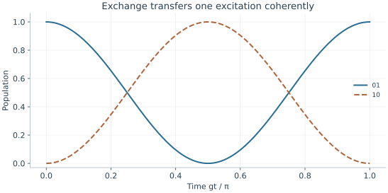
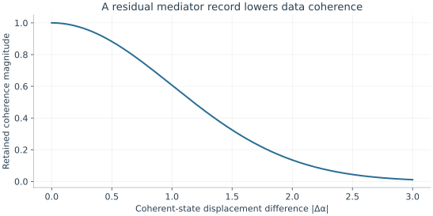

Starting point: Chapters 1–3; physical concepts and approximations are introduced as needed.
Anchor example: Two qubits coupled through a ZZ interaction.
This lesson includes explanations, worked examples, and problems with solutions. Advanced results whose proofs are outside the chapter are identified explicitly.
A drive on each qubit supplies every single-qubit rotation. Yet a product of single-qubit operations never turns a product state into an entangled one. Entanglement needs a term in the Hamiltonian that involves both qubits at once. Which such terms can hardware supply, and how do they become a gate?
We first ask how the energy of one qubit can depend on the state of the other. That dependence gives a conditional phase which no local correction removes. A second kind of coupling, exchange, moves an excitation between the qubits. Adding local rotations turns the conditional phase into controlled-Z. When qubits cannot couple directly, we ask whether a shared oscillator can carry the interaction, and that forces a quantum description of oscillators: ladder operators, coherent states, and phase space. Finally, asking what the mediator remembers about the data shows how an incomplete interaction costs coherence, and why the fastest gate need not be the best.
Our first question is how the energy of one qubit can depend on the state of another.
4.1 Interaction Models
Two well-controlled qubits stay computationally separate unless some term in the Hamiltonian depends on both. What is the simplest such term, and what does it do? A diagonal coupling makes each qubit's energy depend on the other and produces a conditional phase. An off-diagonal coupling instead exchanges one excitation between the two qubits.
4.1.1 Conditional energies
Suppose the frequency of one qubit shifts by an amount that depends on whether the other is 0 or 1. The simplest Hamiltonian with this property is \(H=\hbar JZ\otimes Z/2\), with \(J\) an angular frequency. Use the basis order 00, 01, 10, 11. Multiplying the two Z eigenvalues gives the energies \(+\hbar J/2,-\hbar J/2,-\hbar J/2,+\hbar J/2\). Each basis state is stationary, so after a time \(t\) its amplitude gains the phase \(\phi_{xy}=\mp Jt/2\) set by its energy.
Could those phases come from separate one-qubit operations? Local diagonal phases have the form \(\phi_{xy}=a_x+b_y\). Their combination \(\phi_{00}-\phi_{01}-\phi_{10}+\phi_{11}\) cancels identically. For the interaction it equals \(-2Jt\), which is generally nonzero modulo \(2\pi\). So this combination measures a conditional phase that local phase corrections cannot remove.
The same calculation shows why a basis-state test misses the interaction. Every basis population stays unchanged, because each basis state only gains a phase.
4.1.2 Exchange interactions
Not every coupling is diagonal. What if the interaction moves an excitation from one qubit to the other? Apply \(XX+YY\) to the four basis states. On 00 and 11 the X and Y contributions cancel. On 01 and 10 they add, giving \(2\ket{10}\) and \(2\ket{01}\). So \(H=\hbar g(XX+YY)/2\) acts as \(\hbar gX\) in the one-excitation subspace spanned by 01 and 10, and as zero outside it.
Exponentiating that two-state matrix gives \(\ket{01}\mapsto\cos(gt)\ket{01}-i\sin(gt)\ket{10}\). Full population exchange occurs at \(gt=\pi/2\), but the phase \(-i\) matters when other basis amplitudes are present. At half that time the result is entangled. If \(g/(2\pi)=5\) MHz, those times are 50 ns and 25 ns. Here \(g\), like \(J\), is an angular frequency. When we meet electron spins, \(J\) will instead denote an exchange energy.

Under H/ℏ = g(XX+YY)/2, the 01 and 10 populations follow cos²(gt) and sin²(gt). Equal populations at gt=π/4 accompany the relative phase −i stated in the text.
Problem 4.1. For the exchange model, when is population fully transferred from 01 to 10?
Worked solution
At gt=π/2, the state is −i|10〉. Half that duration produces equal populations with a relative phase.
4.2 Entangling Gates
A conditional energy or an exchange coupling produces some two-qubit unitary. How do we turn it into a standard gate, and what can we do when two qubits cannot couple directly? Adding local Z rotations to the ZZ evolution gives controlled-Z, which we check by its effect on a superposition. When qubits are far apart, a shared oscillator can carry the conditional phase between them.
4.2.1 Controlled phases
Which duration and corrections turn the ZZ evolution into controlled-Z? For \(Jt=\pi/2\), the evolution is \(e^{-i\pi/4}\operatorname{diag}(1,i,i,1)\). A following \(R_z(-\pi/2)\) on each qubit supplies, relative to its 00 entry, the factors \((1,-i,-i,-1)\). Multiplying entries leaves \(\operatorname{diag}(1,1,1,-1)\), which is controlled-Z apart from a common phase.
Does it entangle? Apply controlled-Z to \(\ket{++}\). The amplitudes become \((1,1,1,-1)/2\). A product state requires the determinant of its two-by-two amplitude table to vanish. Here it is \((-1-1)/4=-1/2\), so the state cannot factor. The phase calculation certifies the intended unitary, and the amplitude table shows what that unitary does to a superposition.
4.2.2 Mediated interactions
Suppose two qubits sit too far apart to couple directly. Can a third system carry the interaction? It can, if each qubit pushes on that system with a force that depends on its state. The most common mediator is a mechanical vibration or an electromagnetic mode that behaves as a harmonic oscillator, so we first need its quantum description.
A harmonic oscillator is the equally spaced ladder we rejected as a qubit: levels \(\ket n\), \(n=0,1,2,\ldots\), with energies \(\hbar\omega(n+\tfrac12)\). As a mediator, the equal spacing is an asset, since one frequency moves it up or down the whole ladder. We describe a step down the ladder with the lowering operator \(a\), defined by \(a\ket n=\sqrt n\ket{n-1}\), so that \(a\ket0=0\). Its adjoint, the raising operator, acts as \(a^\dagger\ket n=\sqrt{n+1}\ket{n+1}\). Then \(a^\dagger a\ket n=n\ket n\), so \(a^\dagger a\) counts excitations and \(H=\hbar\omega(a^\dagger a+\tfrac12)\). We take as a physical input that the oscillator's position is proportional to \(a+a^\dagger\), with exactly these \(\sqrt n\) weights. A force that couples to position therefore adds a term proportional to \(a+a^\dagger\). We derive this ladder later, when we quantize an electrical circuit.
What state does a push create from the ground state? Consider the coherent state labelled by a complex number \(\alpha\):
Applying \(a\) to each term brings down \(\sqrt n\), which cancels part of \(\sqrt{n!}\), so \(a\ket\alpha=\alpha\ket\alpha\). Its mean position is proportional to \(\bra\alpha(a+a^\dagger)\ket\alpha=2\operatorname{Re}\alpha\). So \(\alpha\) is a point in a plane whose coordinates are proportional to the mean position and mean momentum, \(\operatorname{Re}\alpha\) and \(\operatorname{Im}\alpha\). This plane is called phase space. Because \((a^\dagger)^n\ket0=\sqrt{n!}\ket n\), we can also write \(\ket\alpha=e^{-|\alpha|^2/2}e^{\alpha a^\dagger}\ket0\).
Now let the push depend on a data observable \(S\). In the frame rotating at the oscillator frequency, with the push detuned from it by \(\delta\), take
On an eigenstate of \(S\) with value \(s\), write \(F=gse^{-i\delta t}\), so \(H/\hbar=Fa+F^*a^\dagger\). Try a coherent state with a moving label and a phase, \(e^{i\theta}e^{-|\alpha|^2/2}e^{\alpha a^\dagger}\ket0\). Its time derivative is the same state multiplied by \(i\dot\theta-\tfrac{d}{dt}\tfrac{|\alpha|^2}{2}+\dot\alpha a^\dagger\). The evolution law requires this to equal \(-i(Fa+F^*a^\dagger)\), and \(a\) acting on the state just gives \(\alpha\). Matching the \(a^\dagger\) terms gives \(\dot\alpha=-iF^*\). Matching the remaining numbers gives \(\dot\theta=-\operatorname{Re}(F\alpha)\), and their real parts agree automatically. So the state stays coherent. Starting from rest,
The label moves on a circle in phase space whose size is proportional to \(s\). Moving a coherent state's label in this way is called a displacement.
At \(T=2\pi/|\delta|\), the circle closes and \(\alpha\) returns to zero for every \(s\). The oscillator then carries no record of the data. What remains is the phase. Integrating \(\dot\theta=(g^2s^2/\delta)(1-\cos\delta t)\) over one period gives \(\theta(T)=2\pi g^2s^2/\delta^2\), proportional to \(s^2\). If \(S=S_A+S_B\) is a sum of one-qubit observables with values \(\pm1\), then \(s^2=2+2s_As_B\). The phase therefore contains a term proportional to \(s_As_B\): a two-qubit conditional phase, left by a mediator that has returned to its starting state. Its sign depends on the force convention. The physical requirement is that the final mediator state not reveal the logical branch.
Problem 4.2. Can separate Z rotations erase every ZZ conditional phase?
Worked solution
No. They change individual phases but leave the nonlocal combination unchanged modulo 2π.
4.3 Gate Performance
An entangling gate is right when its unitary is right, but hardware also leaves records and takes time. What does an imperfect mediator do to the data, and why is a faster gate not always better? Asking what the unmeasured mediator remembers gives a loss of coherence set by an overlap. Balancing relaxation against off-resonant errors then gives an optimum gate duration.
4.3.1 Residual entanglement
What if the mediator's circle does not quite close? Then the two data branches leave it in different states. Suppose an intended superposition ends as \((\ket{00}\ket{e_0}+\ket{11}\ket{e_1})/\sqrt2\), with normalized mediator states \(\ket{e_0},\ket{e_1}\), and the mediator is not measured. How much of the data's coherence survives?
We test it as we test a Bell pair: find the probability that the data is in \(\ket{\Phi^+}=(\ket{00}+\ket{11})/\sqrt2\), whatever the mediator does. Projecting the data onto \(\ket{\Phi^+}\) leaves the mediator in \((\ket{e_0}+\ket{e_1})/2\), whose squared length is
Identical mediator states give \(P=1\). Orthogonal ones give \(P=1/2\), the value for a random mixture of \(\ket{00}\) and \(\ket{11}\). Choosing the relative phase of the test state to match gives at best \((1+|\braket{e_0}{e_1}|)/2\). So the overlap sets the contrast of every such interference measurement, while the data populations stay correct. In the density-matrix description of the data, this overlap appears as the off-diagonal entry \(\bra{00}\rho\ket{11}=\braket{e_1}{e_0}/2\).
For coherent states the overlap follows from the series:
whose magnitude is \(e^{-|\alpha-\beta|^2/2}\). For two branches whose labels differ by \(\Delta\alpha\), the surviving coherence magnitude is \(e^{-|\Delta\alpha|^2/2}\). A small failure to close the phase-space trajectory therefore lowers the interference contrast, even though every population looks right.
4.3.2 Speed and unwanted coupling
Should a gate be as fast as possible? A shorter duration \(t\) lowers the exposure to relaxation, about \(t/T_1\) under the exponential-relaxation model. But a fixed rotation in less time needs a stronger drive, and a stronger drive excites unwanted transitions more. A simple illustrative competition is \(\epsilon(t)=at+b/t^2\), with \(a\) in s⁻¹ and \(b\) in s². The first term models decoherence. The second models an off-resonant process that grows with drive strength at fixed pulse area.
Differentiating gives \(d\epsilon/dt=a-2b/t^3\), so this toy model has its minimum at \(t=(2b/a)^{1/3}\). The fastest gate is therefore not the most accurate one. A real optimization must add the terms this toy model omits, such as coupling to spectator qubits and the bandwidth of the control hardware.

The curve exp(−|Δα|²/2) is the magnitude of the coherent-state overlap. Correct data populations can coexist with this loss of phase-sensitive contrast.
Problem 4.3. Why must an auxiliary oscillator close its trajectory?
Worked solution
If its final state depends on the data, tracing it out reduces coherence. Closing removes the distinguishing record while allowing a geometric phase to remain.
We now have candidate gates. Their inputs and outputs are only as good as the states we prepare and the bits we read, so how is a qubit put into a known state, and how is it measured?
Worked model check. A mediator ends with coherent-state displacement difference 0.2 between two data branches. What fraction of their coherence magnitude remains?
Worked solution
The overlap magnitude is \(e^{-0.2^2/2}=e^{-0.02}\simeq0.9802\). Correct populations would not expose this contrast loss.
These exercises draw on the whole chapter. Attempt each question before opening a hint, explain your reasoning, then compare it with the worked solution.
Under \(H=\hbar JZ\otimes Z/2\), the four basis phases after time \(t\) are \(e^{\mp iJt/2}\). Evaluate the local-correction-proof combination \(\phi_{00}-\phi_{01}-\phi_{10}+\phi_{11}\), and find the time that gives a controlled-\(Z\) (up to local phases) for \(J/2\pi=1\) MHz.
Hint 1
Energies are \(+\hbar J/2\) on \(00,11\) and \(-\hbar J/2\) on \(01,10\).
Hint 2
CZ needs \(Jt=\pi/2\).
Worked solution
The phases are \(\phi_{00}=\phi_{11}=-Jt/2\) and \(\phi_{01}=\phi_{10}=+Jt/2\), so the combination is \(-2Jt\). A controlled-\(Z\) needs this combination to equal \(\pi\) modulo \(2\pi\), that is \(Jt=\pi/2\): \(t=\pi/(2J)=1/(4\times1\ \text{MHz})=250\) ns. The rest of the phases are removed by single-qubit \(Z\) rotations.
For the exchange interaction \(H=\hbar g(XX+YY)/2\) with \(g/2\pi=2\) MHz, how long does a full swap \(\ket{01}\to\ket{10}\) take, and how long does the entangling half-swap take? What state does the half-swap make from \(\ket{01}\)?
Full transfer needs \(gt=\pi/2\): \(t=1/(4\times2\ \text{MHz})=125\) ns. The half-swap at \(gt=\pi/4\) takes \(62.5\) ns and gives \((\ket{01}-i\ket{10})/\sqrt2\), a maximally entangled state with a definite relative phase \(-i\). The states \(\ket{00}\) and \(\ket{11}\) are untouched by this interaction.
A mediator ends a gate in coherent states that differ by \(\Delta\alpha\) between two data branches. Find the remaining fraction of coherence, \(e^{-|\Delta\alpha|^2/2}\), for \(\Delta\alpha=0.5\) and \(\Delta\alpha=1\). How small must \(|\Delta\alpha|\) be to keep \(99.9\%\)?
Hint 1
Solve \(e^{-x^2/2}=0.999\).
Hint 2
\(-2\ln0.999\approx0.002\).
Worked solution
\(e^{-0.125}\approx0.88\) and \(e^{-0.5}\approx0.61\). Keeping \(99.9\%\) requires \(|\Delta\alpha|^2\le-2\ln0.999\approx0.002\), so \(|\Delta\alpha|\lesssim0.045\). The mediator must return to its starting state to within a few hundredths of a displacement unit; a gate that leaves the oscillator slightly displaced degrades the data coherence even when all data populations are correct.
Build a CNOT (control qubit 1, target qubit 2) from the ZZ interaction. (a) Show that \(H_2\,\mathrm{CZ}\,H_2\) is CNOT by checking its action on \(\ket{10}\) and \(\ket{11}\). (b) List the full sequence, starting from \(e^{-iJtZZ/2}\) with \(Jt=\pi/2\). (c) Apply it to \(\ket{+}\ket0\).
Hint 1
\(HZH=X\).
Hint 2
CZ is the ZZ evolution followed by \(R_z(-\pi/2)\) on each qubit.
Worked solution
(a) On the control-\(1\) branch, CZ applies \(Z\) to the target, and \(HZH=X\); on the control-\(0\) branch it applies \(I\), and \(HIH=I\). So \(H_2\,\mathrm{CZ}\,H_2\) flips the target exactly when the control is \(1\): \(\ket{10}\to\ket{11}\), \(\ket{11}\to\ket{10}\). (b) \(H\) on qubit 2; ZZ evolution for \(Jt=\pi/2\); \(R_z(-\pi/2)\) on both qubits; \(H\) on qubit 2. (c) From \(\ket+\ket0\) the result is \((\ket{00}+\ket{11})/\sqrt2\), the Bell state, up to a global phase.
Two devices implement the same truth table on \(00,01,10,11\): device A performs CNOT, and device B performs CNOT followed by CZ. (a) Show that they agree on every basis input. (b) Apply both to \(\ket+\ket0\) and compare the outputs. (c) What test distinguishes them?
Hint 1
CZ changes only the sign of \(\ket{11}\).
Hint 2
CNOT maps \(\ket+\ket0\) to \(\ket{\Phi^+}\).
Worked solution
(a) CZ only multiplies \(\ket{11}\) by \(-1\), which changes no basis-state population, so both devices map each basis input to the same basis output. (b) A gives \((\ket{00}+\ket{11})/\sqrt2\); B gives \((\ket{00}-\ket{11})/\sqrt2\). These are orthogonal: on this input the devices produce perfectly distinguishable outputs. (c) Prepare superpositions and measure phase-sensitive observables, for example \(\langle X\otimes X\rangle\), which is \(+1\) for A’s output and \(-1\) for B’s. Process tomography or interleaved benchmarking does this systematically; a truth table cannot.
Use the toy error model \(\epsilon(t)=at+b/t^2\) with \(a=1/T_1=10^4\ \mathrm{s^{-1}}\) and \(b=10^{-19}\ \mathrm{s^2}\). (a) Find the optimal gate time and the minimum error. (b) Compare with \(t=50\) ns. (c) Explain the two terms physically and why the optimum is shallow.
Hint 1
\(t^*=(2b/a)^{1/3}\).
Hint 2
At the optimum, \(at^*=2b/t^{*2}\).
Worked solution
(a) \(t^*=(2\times10^{-19}/10^4)^{1/3}\approx27\) ns, giving \(\epsilon\approx2.7\times10^{-4}+1.4\times10^{-4}\approx4.1\times10^{-4}\). (b) At \(50\) ns, \(\epsilon=5\times10^{-4}+4\times10^{-5}=5.4\times10^{-4}\). (c) The first term models decay during the gate, growing with duration; the second models off-resonant errors that grow with the drive strength needed for a fixed area. Near the optimum the error changes slowly, so a range of durations performs similarly, and other constraints, such as crosstalk and bandwidth, often decide the choice.
For \(H=\hbar JZ\otimes Z/2\) acting for time \(t\) on \(\ket{++}\), (a) write the four amplitudes; (b) use the determinant of the two-by-two amplitude table used to test controlled-Z for entanglement, \(|\alpha_{00}\alpha_{11}-\alpha_{01}\alpha_{10}|\), to find how entangled the output is as a function of \(Jt\); (c) at which \(Jt\) is the entanglement largest, and when does it vanish?
Hint 1
Amplitudes are \(\frac12(e^{-iJt/2},e^{iJt/2},e^{iJt/2},e^{-iJt/2})\).
Hint 2
\(e^{-iJt}-e^{iJt}=-2i\sin Jt\).
Worked solution
(a) \(\frac12\big(e^{-iJt/2},e^{iJt/2},e^{iJt/2},e^{-iJt/2}\big)\). (b) \(\alpha_{00}\alpha_{11}-\alpha_{01}\alpha_{10}=\frac14(e^{-iJt}-e^{iJt})=-\frac i2\sin Jt\), with magnitude \(\frac12|\sin Jt|\). (c) It is largest, \(\frac12\) (maximal entanglement, as for a Bell state), at \(Jt=\pi/2\), the CZ point, and zero at \(Jt=0,\pi,\dots\), where the evolution is a product of local phase gates. An interaction left on twice as long as intended undoes its own entangling action.
A student checks a mediated gate by verifying that the oscillator’s mean phonon number returns to its initial value in both data branches, and concludes that the mediator is disentangled. Explain why this can fail for coherent states \(\ket{\alpha}\) and \(\ket{-\alpha}\), and compute the remaining data coherence for \(\alpha=0.3\).
Hint 1
\(\ket\alpha\) and \(\ket{-\alpha}\) have the same mean phonon number \(|\alpha|^2\).
Hint 2
\(\Delta\alpha=2\alpha\).
Worked solution
\(\ket{\alpha}\) and \(\ket{-\alpha}\) have the same mean phonon number \(|\alpha|^2\), so a population check sees nothing wrong, yet the two states are different and partly distinguishable. The data coherence is multiplied by \(|\braket{-\alpha}{\alpha}|=e^{-|2\alpha|^2/2}=e^{-0.18}\approx0.84\) for \(\alpha=0.3\). Disentanglement requires the mediator states in the two branches to be the same state, not merely to have the same energy; it is tested by interference on the data or by measuring the mediator’s phase-sensitive observables.
Two qubits coupled by exchange have frequencies differing by \(\delta\). In the one-excitation subspace \(\{\ket{01},\ket{10}\}\), the Hamiltonian is \(\hbar\begin{pmatrix}\delta/2&g\\g&-\delta/2\end{pmatrix}\). (a) Using the detuned Rabi formula, find the maximum swap probability. (b) Evaluate it for \(\delta=0\), \(\delta=2g\), and \(\delta=20g\). (c) How can this be used to switch an always-on coupling on and off?
Hint 1
This matrix has the same form as \((\Delta Z+\Omega X)/2\) with \(\Omega=2g\), \(\Delta=\delta\).
Hint 2
Maximum transfer is \(\Omega^2/(\Omega^2+\Delta^2)\).
Worked solution
(a) Matching to \((\Delta Z+\Omega X)/2\) gives \(\Omega=2g\), \(\Delta=\delta\), so the maximum swap probability is \(\frac{4g^2}{4g^2+\delta^2}\). (b) \(\delta=0\): \(1\). \(\delta=2g\): \(\frac12\). \(\delta=20g\): \(\frac{4}{404}\approx0.01\). (c) Tuning the qubits into resonance turns the exchange on; detuning them far apart suppresses it, leaving only a small residual (and a second-order ZZ shift). Tunable-frequency qubits use this to implement two-qubit gates on demand with a fixed coupler.
A mediated gate is designed so that the oscillator trajectory closes at \(T=2\pi/|\delta|\), but the pulse ends a little late, at \(T+\tau\). Near closure, the displacement difference between branches grows roughly as \(\Delta\alpha\approx2g\tau\) for a force of strength \(g\) on observable values \(s=\pm1\). (a) For \(g/2\pi=50\) kHz, what timing error \(\tau\) keeps the coherence above \(0.999\)? (b) What does this imply about timing precision relative to the gate duration if \(\delta/2\pi=200\) kHz?
Hint 1
Require \(|\Delta\alpha|\lesssim0.045\).
Hint 2
\(T=1/(200\ \text{kHz})=5\) μs.
Worked solution
(a) \(|\Delta\alpha|=2g\tau\le0.045\) gives \(\tau\le0.045/(2\times2\pi\times5\times10^4\ \mathrm{s^{-1}})\approx72\) ns. (b) With \(T=5\) μs, the timing must be correct to about \(1.4\%\) of the gate duration. The tolerance tightens as the force strengthens, so faster mediated gates demand proportionally more precise timing, and frequency drifts in \(\delta\) shift the closure time in the same way. (These estimates use the stated scaling; an exact treatment uses the full phase-space trajectory.)